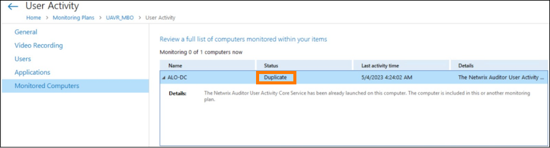
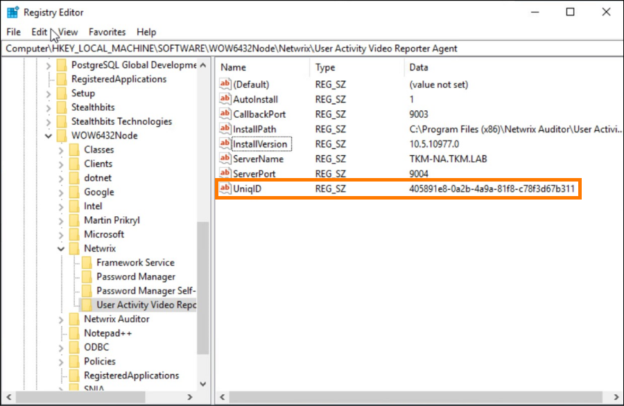

Symptoms
The following symptoms are present in your Netwrix Auditor environment:
-
Auditor prompts the following error in Health Log for your User Activity monitoring plan:
Source: User Activity Audit Service Event ID: 2001 The Netwrix Auditor User Activity Core Service has been already launched on this computer. The computer is included in this or another monitoring plan
-
The list of monitored computers in your User Activity monitoring plan states the Duplicate status for one or multiple servers.
 -
No monitoring data is available for the Duplicate servers.
Causes
-
The affected server is monitored by two separate monitoring plans.
IMPORTANT: After performing the troubleshooting steps, make sure the server is included in a single User Activity plan.
-
The affected server was previously monitored by a different monitoring plan, and it is now being added to a new monitoring plan.
Resolution
Refer to the following steps to resolve the issue:
-
Remove the affected server from all existing User Activity monitoring plans. Allow Auditor to uninstall the User Activity Core Service—in the monitoring plan screen, click Edit Data Source > Monitored Computers to track the Core Service status.
IMPORTANT: Verify the Netwrix Auditor User Activity Core Service is uninstalled on the affected server—review the list of installed apps on the server and uninstall, if still present.
-
On the Auditor host, run the following line in an elevated PowerShell instance to stop the User Activity service:
Stop-Service -Name "NwUserActivitySvc" -
On the affected server, start the Registry Editor and locate the following key:
Computer\HKEY_LOCAL_MACHINE\SOFTWARE\WOW6432Node\Netwrix\User Activity Video Reporter AgentLocate the
UniqIDvalue. Copy the value data and refer to it in the future steps—right-click the key and select Modify.... Once you copy the value, delete theUniqIDvalue. -
On the Auditor host, proceed to the following path to locate the
Agents.xmldocument:%Working_Folder%\User Activity Video Reporter\Agents.xmlRefer to the following default Working Folder path:
%ProgramData%\Netwrix Auditor\ -
Open the
Agents.xmldocument in a text editor. Locate the node containing theUniqIDvalue copied from the affected server. Delete the parent node containing theUniqIDvalue and save the changes. -
On the Auditor host, run the following line in an elevated PowerShell instance to start the User Activity service:
Start-Service -Name "NwUserActivitySvc" -
Re-add the affected server to your User Activity monitoring plan. Allow Auditor some time to install the Core Service and verify the new
UniqIDvalue is created by comparing it to the previously copied value.